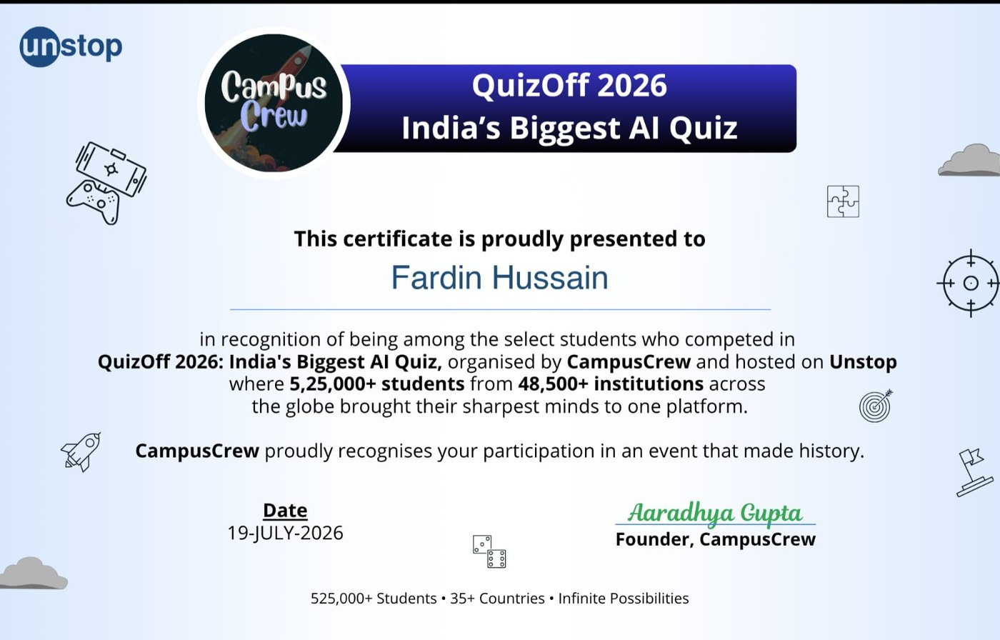
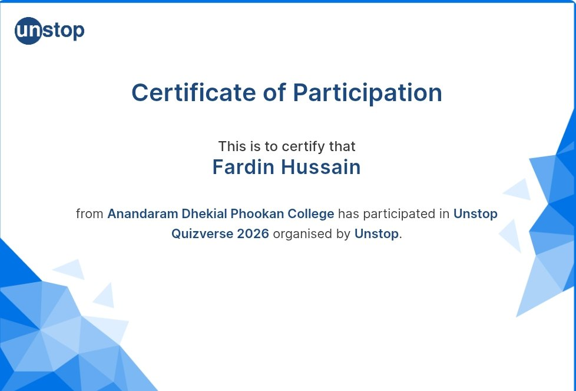

01
Business websites
Professional websites for businesses, institutions, creators and personal brands — clear on mobile and polished on desktop.
ResponsiveSEO-readyFast UI
AI-ASSISTED FULL-STACK DEVELOPER · INDIA
I'm Fardin. I design and build responsive websites and full-stack web apps, using AI to accelerate exploration and coding — while I handle the architecture, decisions, testing and final polish.
I don't want my portfolio to tell you that I can build things. I want the work below to show you.
I build responsive websites, interfaces and full-stack web applications with a practical approach: understand the goal, make the experience clear, build it, test it, and put it online.
AI is part of my workflow, not a substitute for understanding. I use it to research, explore approaches, generate drafts, debug and iterate faster — then I review the output, integrate it and test what actually ships.
I build around what the site needs to achieve, not just how it looks.
The experience is designed to work from phone to desktop.
I care about deployment, polish and the details between “works” and “ready”.
Professional websites for businesses, institutions, creators and personal brands — clear on mobile and polished on desktop.
Interactive applications with authentication, APIs, databases, dashboards, carts, forms and other real functionality.
Fast idea-to-prototype work using AI as a development accelerator — with human review, testing and iteration before launch.
I keep the showcase intentionally small: each project demonstrates a different kind of client work and has a live deployment you can open.
A sneaker marketplace concept built to demonstrate a product-style experience across customer, seller and admin flows — from discovery and cart to bidding and management.
Live demoA food-ordering app with a browsable menu, cart and order flow, backed by a Node.js and Express server and deployed online.
Live demoArticles · Research · Timeline
A digital wall magazine for a college botany department, designed so readers can scan a QR code and read articles comfortably on their phones.
Live demoA practical stack for shipping websites and web apps. AI accelerates the workflow; fundamentals, testing and final decisions stay human-led.
Clarify the goal, audience, content, features and what success should look like.
Turn the brief into a clear structure, visual direction and practical feature plan.
Use modern web tools and AI-assisted iteration to move quickly without skipping the fundamentals.
Check responsiveness, interactions and key flows, then deploy the finished experience.
Projects are the main proof of my development skills. These highlights show the learning and technology events that support the work.
Studying AI foundations to understand concepts behind modern AI systems and become a better AI-assisted developer.

View certificateParticipated in the AI-focused QuizOff 2026 organised by CampusCrew and hosted on Unstop.

View certificateParticipated in Unstop Quizverse 2026 through Anandaram Dhekial Phookan College.
Send me the idea, the problem you want to solve and any deadline you have. I'll tell you what I can build and how I'd approach it.